O ChatGPT é uma inteligência artificial desenvolvida pela OpenAI com o objetivo de entender e gerar linguagem natural. Podemos usá-lo para tirar dúvidas, criar código, explicar conceitos, gerar imagens, criar tabelas, entre muitas outras funções úteis para o dia a dia.
Se você está começando a aprender programação, com certeza o chat Gpt pode ser de grande auxílio. Você pode pedir pra ele, por exemplo, te explicar linhas de código ou explicar o que determinadas funções fazem em certos contextos.
Usar o chat gpt é bem simples, basta fazer a pergunta de forma clara e ele retorna um texto com uma resposta elaborada sobre op assunto em questão:
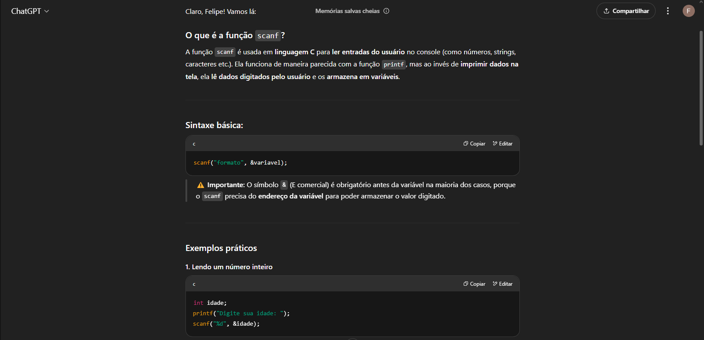 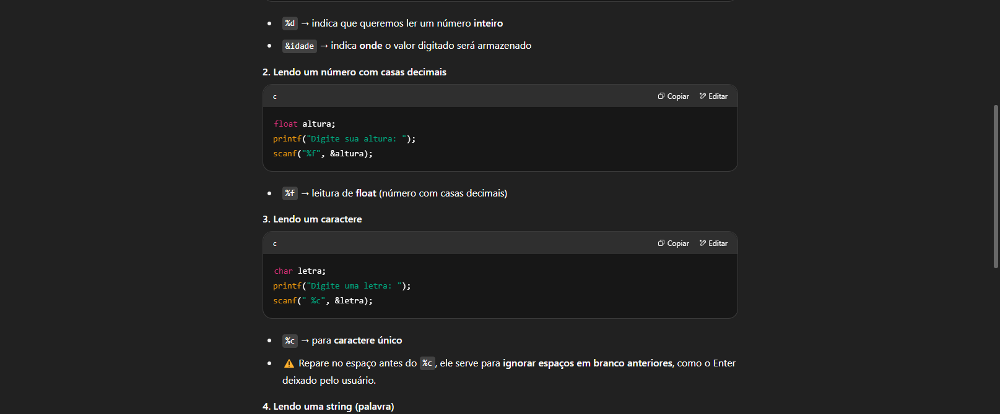 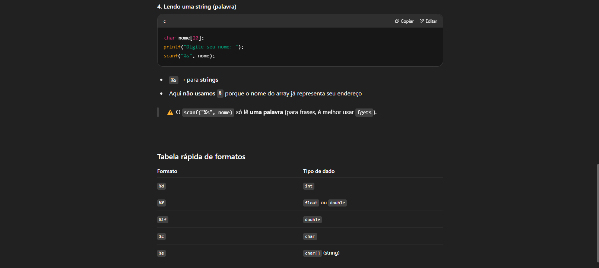Você também pode fazer restrições ou definir a maneira como quer que ele responda. Note que neste exemplo, eu peço especificamente para que ele me forneça apenas um exemplo e me explique em um parágrafo:
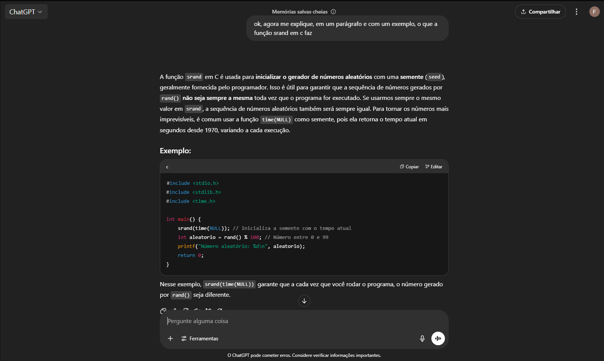Uma outra função super legal do Gpt é que ele pode te explicar um código linha à linha, mostrando o que cada parte do código faz.
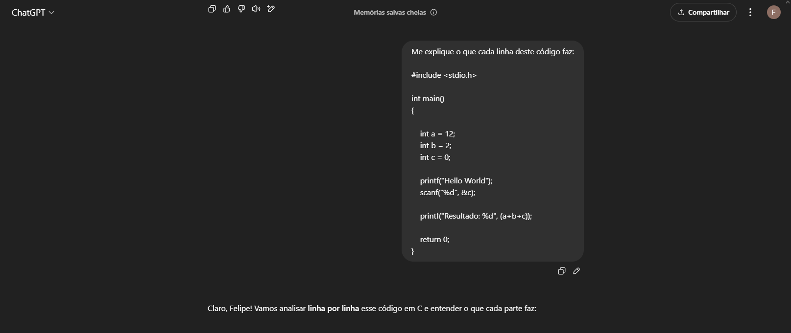 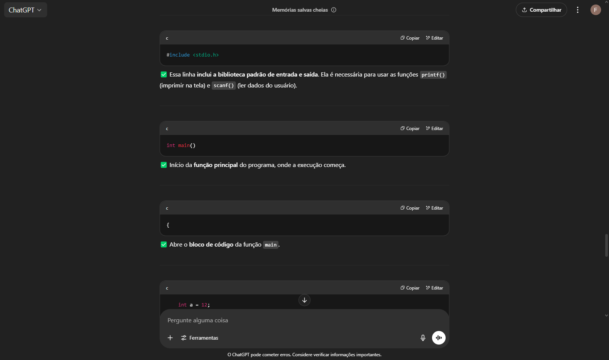 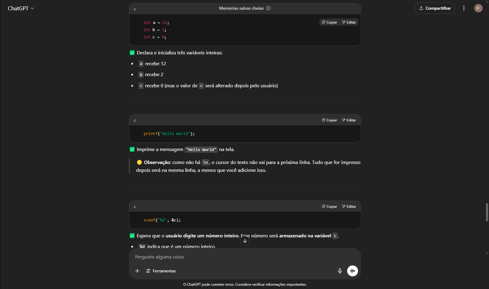 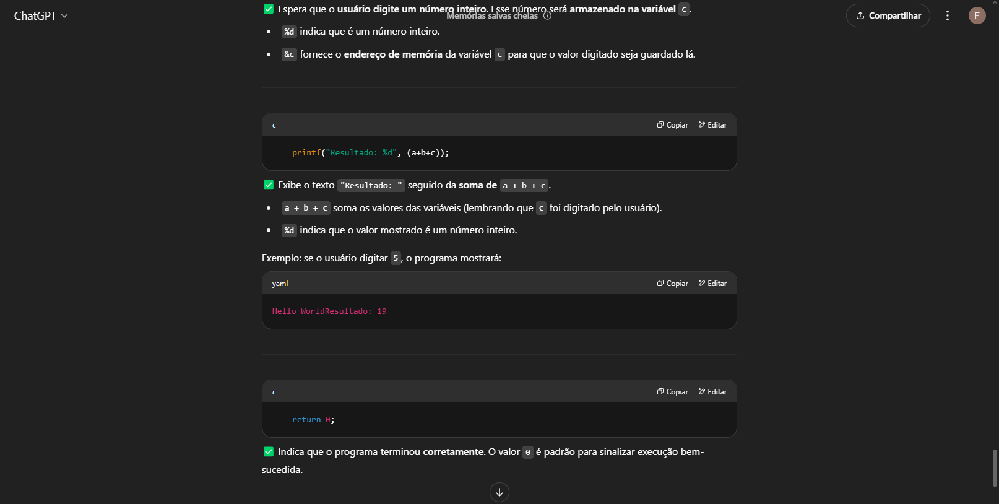 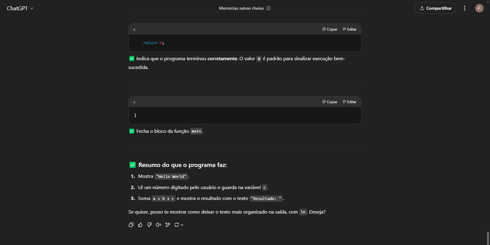Com o chat Gpt, você também pode criar código do zero. Você pode utilizar isso tanto para auxílio em trabalhos ou projetos, quanto para uso próprio criando seus próprios programas. No exemplo abaixo, peço para ele criar um programa para calculo de imposto de renda:
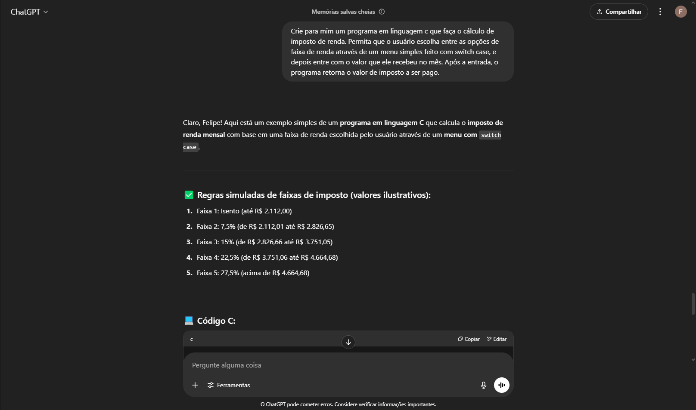 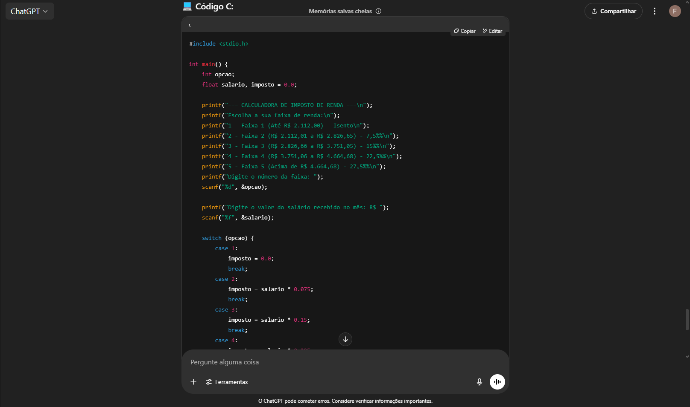 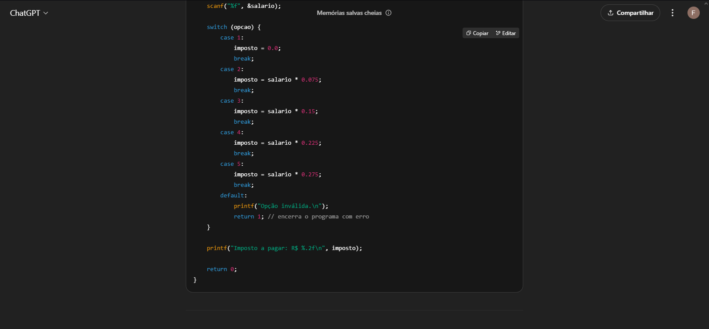 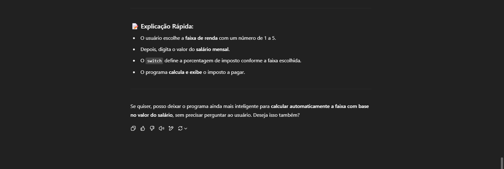